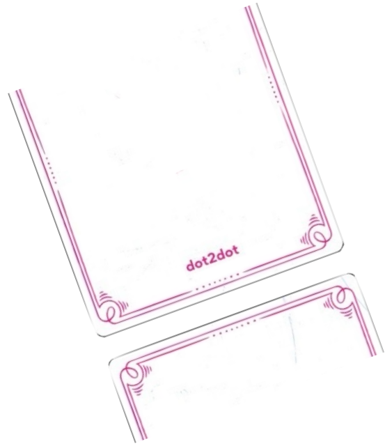

Draw 2 word cards (simple for Level 1, standard for Level 2) and place them in the center.Teams decide who will play each round. Players put on blindfolds, and the regulator starts a 2-minute timer.
The regulator distributes Braille letter cards to the blindfolded players.
Each player can:Keep: Retain a card if needed (max. 10 cards).
Discard: Return an unwanted card to the discard pile.
Replace: Swap a card in hand for a new one if holding the maximum of 10 cards.
The regulator assists in managing the cards during the round.
End of Round：Players remove blindfolds and tally their points.
Levels 1 & 2
Start the Round
Setup
The teams sit across from the regulator.Place the Braille letter cards (Braille side up) in the center.
Player Actions